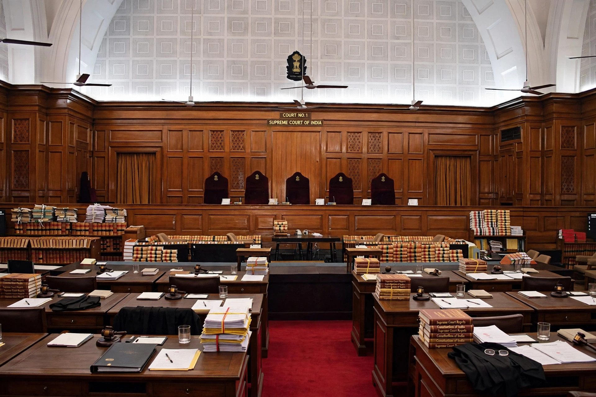

| Chief Justice of India | |
| Incumbent | B. R. Gavai (since 14 May 2025) |
|---|---|
| Appointer | President of India |
| Term | Until the age of 65 |
| First holder | H. J. Kania (1950–1951) |
| Residence | 5 Krishna Menon Marg, New Delhi |
The Chief Justice of India (CJI) is the chief judge of the Supreme Court of India and the highest-ranking officer of the Indian judiciary. The Chief Justice heads the Supreme Court, presides over its principal courtroom, and is the senior-most judge of the Court. The office was established by the Constitution of India, which came into force on 26 January 1950.
Under Article 124(2) of the Constitution, the Chief Justice is appointed by the President of India. By a convention that became firmly established, the outgoing Chief Justice recommends the senior-most judge of the Supreme Court as successor, and seniority is measured by length of service on the Court. The convention was broken controversially in 1973, when A. N. Ray was appointed over three more senior judges following the Kesavananda Bharati judgment, and again in 1977. Judges of the Supreme Court, including the Chief Justice, retire at the age of 65, so tenures as CJI are often short.
Beyond presiding over important constitution benches, the Chief Justice is "Master of the Roster": he or she constitutes the benches of the Court and allocates cases to them, a power the Supreme Court has affirmed as belonging to the CJI alone. The Chief Justice also heads the collegium — the body of the CJI and the four senior-most judges that recommends appointments and transfers of judges of the higher judiciary. The CJI administers the oath of office to the President of India, and if both the offices of President and Vice President fall vacant, the Chief Justice acts as President under the President (Discharge of Functions) Act 1969; Justice M. Hidayatullah did so briefly in 1969, the only occasion on which this has happened.
The 50th Chief Justice, D. Y. Chandrachud, served from November 2022 to November 2024 and presided over several high-profile constitution benches. He was succeeded by Sanjiv Khanna, and on Khanna's retirement by B. R. Gavai, who was sworn in as the 52nd Chief Justice on 14 May 2025.